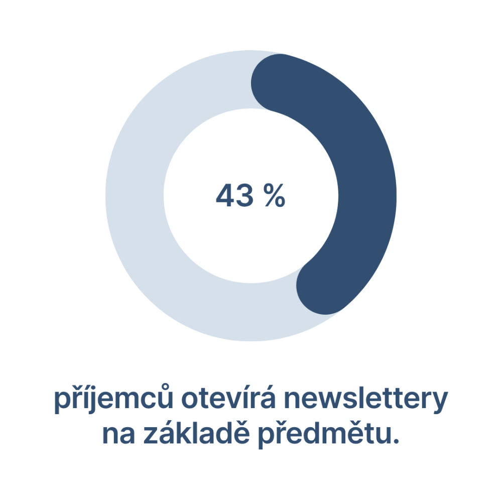

E-mail marketing pořád patří k nejefektivnějším marketingovým kanálům s vysokou návratností. Proto byste kromě automatizací (např. uvítací série, opuštěný košík, svátek) neměli podcenit ani tvorbu newsletterů.
Podle průzkumu e-mail marketingu z roku 2025 téměř polovina předních českých e-shopů (43 %) nerozesílá newslettery vůbec.
Hlavní výhoda e-mailingu spočívá v tom, že se jedná o one-to-one kanál, kdy s každým příjemcem komunikujete napřímo. Dostáváte do osobního prostoru (v tomto případě do e-mailové schránky) konkrétního člověka.
Proto se vyplatí věnovat newsletterům náležitou pozornost a péči.
6 tipů, jak napsat newsletter
Teď už se konečně dostáváme k otázce: jak napsat e-mail, který příjemci otevřou a ideálně si ho i přečtou?
Podívejme se na několik tipů, které zvýší pravděpodobnost úspěšného e-mailingu.
1. Začněte přípravou
E-mailing není o tom, že jednou za týden „něco pošlete, aby byl klid", ale o promyšlené komunikaci.
Než začnete psát, ujasněte si, komu píšete, co mu chcete říct a jak to zapadá do celé vaší marketingové komunikace. Až potom má smysl přemýšlet o dalších krocích.
Držte se jednotného tónu komunikace a podobného vizuálu napříč všemi marketingovými kanály. Newslettery by totiž měly navazovat na váš web, sociální sítě, placené reklamy nebo třeba blog.
Frekvence rozesílky se bude lišit podle typu byznysu – jinak bude komunikovat B2B firma a jinak e-shop s rychloobrátkovým zbožím.
Ze zkušeností vím, že většinou nejlépe funguje posílat newsletter 1× týdně – samozřejmě za předpokladu, že máte co říct. Pokud ne, nelámejte to přes koleno. Obecně ale platí, že byste měli poslat e-mail minimálně 1× měsíčně, aby na vás odběratelé nezapomněli.
Nezapomeňte ani na segmentaci a personalizaci, abyste posílali svým odběratelům jen relevantní obsah. Například e-shop s módou by neměl posílat tip na novou dámskou kabelku pánskému publiku. A tak bychom mohli pokračovat.
V neposlední řadě se ujistěte, že máte správně nastavené DNS záznamy. Pokud si nejste jistí, raději se obraťte na specialistu. Nejlepší newsletter na světě vám nebude nic platný, pokud automaticky skončí ve spamu.
2. Vyšperkujte předmět a preheader
Předmět newsletteru je první věc, kterou příjemce uvidí – a často i poslední, pokud ho nezaujme. Podle nedávného průzkumu 43 % příjemců otevírá newslettery právě na základě předmětu.
Tato krátká věta nebo heslo tedy rozhoduje o tom, jestli vaše práce vůbec padne na úrodnou půdu. Pokud vašeho příjemce předmět nezaujme, pak všechno úsilí, které jste věnovali tvorbě newsletteru, přijde vniveč.
Ideálně se vyhněte otřepaným slovesům a frázím typu „získejte", „dopřejte si" nebo „akce".
Dobrý předmět by měl probudit ve čtenářích emoce. Někdy ani nevadí trochu šokovat, ale pozor na laciné clickbaity, které snižují vaši důvěryhodnost.
Extrémně podceňovanou součástí newsletteru je preheader. Jde o popisek, který se zobrazuje v náhledu e-mailů. Dobrý preheader by měl rozvést, doplnit nebo podpořit předmět – nikoli ho jen opakovat.
Příklad:
Předmět: Už víte, proč vám zákazníci odcházejí?
Preheader: Tady je 5 možných důvodů a návod, jak je udržet
Několikrát jsem se setkal s názorem, že v předmětu byste měli oslovit příjemce jménem, např.: „Tomáši, už to víte?"
Ale jako každý univerzální tip musíte i tento otestovat. Z vlastní zkušenosti můžu potvrdit, že spíše než oslovení rozhoduje samotný obsah předmětu.
3. Udržte pozornost
Řekněme, že jste příjemce zaujali, takže otevřel váš newsletter. Skvělé! Ale tím všechno teprve začíná.
První zlom přichází u tzv. foldu – tedy části, kterou uživatel vidí jako první bez nutnosti scrollování. Pokud ho zaujmete, existuje šance, že bude číst dál.
Jak ho ale přesvědčit, že mu newsletter za tu chvilku času stojí?
V první řadě musíte jít rovnou k věci. Vyhněte se úvodním frázím a formalitám, které slouží jen jako vycpávka bez přidané hodnoty. Začněte pěkně „zostra" – třeba nějakým trefným a úderným claimem.
To nejdůležitější patří na začátek, to nejméně podstatné (např. odkazy na vaše sociální sítě) na konec. Říká se tomu princip obrácené pyramidy.

V celém newsletteru používejte krátké a srozumitelné věty. Snažte se, aby jeden odstavec nepřekročil tří věty. Tučně zvýrazněné klíčové fráze, odrážky nebo číslované seznamy pomáhají příjemcům e-mail přejet očima.
4. Vylaďte design
Design newsletteru není jen estetická záležitost. Jak už jsme si řekli, vizuální prvky by měly odpovídat vaší brandové identitě. Příjemce by měl poznat, od koho mu e-mail přišel, i bez přečtení odesílatele.
Grafika by měla podporovat obsah, ne ho přebíjet. Příliš mnoho bannerů, pohyblivých prvků nebo velkých fotek ve výsledku může spíše uškodit. Mnoho e-mailových klientů navíc zobrazuje obrázky až po jejich povolení.
Dobře vypadající newsletter zvládnete připravit poměrně snadno. Spousta e-mailingových nástrojů totiž obsahuje drag & drop editor. Každopádně ze všeho nejdůležitější je čitelnost, kterou ovlivňuje například velikost písma nebo kontrast textu a pozadí.
Nezapomeňte, že odběratelé čtou newslettery i na mobilu. Proto testujte responzivitu a sledujte, jestli se layout nerozsype na menších zařízeních.
5. Vyzvěte čtenáře k akci
Každý newsletter má svůj cíl a jeho úkolem je k němu příjemce dovést. Proto se nikdy neobejde bez call to action (CTA) – výzvě k akci.
Co má čtenář udělat? Nakoupit? Prohlédnout si nový produkt? Přečíst si nový článek? Stáhnout si e-book? Řekněte mu to.
Velkou chybou bývá více různých výzev v jednom e-mailu. Chcete po čtenáři, aby nakoupil a zároveň vám dal recenzi? Tříštíte jeho pozornost.
Místo spletité křižovatky nabídněte čtenáři rovnou cestu k cíli. Doplňující odkazy samozřejmě přidat můžete, ale až po hlavním sdělení.
Výzva musí být konkrétní. Vyhněte se metaforám jako „Vstupte do světa možností", které čtenáře zmatou. Uživatel musí vědět, co se stane, když klikne na tlačítko. Nebojte se být konkrétní, např.: „Chci si stáhnout checklist a zlepšit svůj web".
Určitě také umožněte čtenářům odpovědět na váš newsletter a na jejich podněty reagujte.
6. Testujte, měřte a zlepšujte každý detail
Odesláním newsletteru práce s ním nekončí. Potřebujete vědět, jak se mu vedlo, a tyto informace pak využít při tvorbě dalších e-mailů. V opačném případě svůj e-mailing nikdy nevyužijete na maximum.
Základem je sledovat základní metriky: OR, CR, CTR, konverze, míru odhlášení nebo třeba počet odpovědí, pokud je výzva interaktivní. Každé číslo říká něco o tom, jak moc (nebo málo) vaše sdělení rezonovalo.
Cenným, ale velmi přehlíženým nástrojem je A/B testování. Testování přitom není komplikované a zvládne ho prakticky každý.
Vyberete si jeden prvek – například předmět, odesílatele nebo obsah e-mailu – a otestujete 2 varianty na vzorku příjemců. Vítězná varianta putuje ke všem ostatním příjemcům kampaně.
I zdánlivě malý rozdíl mezi oběma variantami vám může přinést více otevření, prokliků nebo konverzí.
Kromě A/B testování sledujte, co (ne)funguje v čase, např.:
- jaké předměty lidé otevírají
- jaký typ e-mailu je zajímá
- kdy se nejčastěji prokliknou na web
- co nejvíc pomáhá konverzím
- jestli se mění chování čtenářů (např. opadá zájem)
Ten, kdo testuje a vyhodnocuje, bude mít vždy náskok před tím, kdo jen „něco pošle" a kampaně dále nezkoumá.
Investujte do newsletterů
Dobrý newsletter vám pomůže budovat vztah se zákazníky a déle je udržet, aby se k vám vraceli a opakovaně nakupovali. Když ho chytnete za správný konec, stane se důležitou součástí vaší marketingové komunikace.
Nemáte na newslettery čas nebo chuť? Nebo chcete nezaujatý pohled zvenčí, který odhalí slabá místa a posune váš e-mail marketing? Ozvěte se mi, rád vám pomůžu.